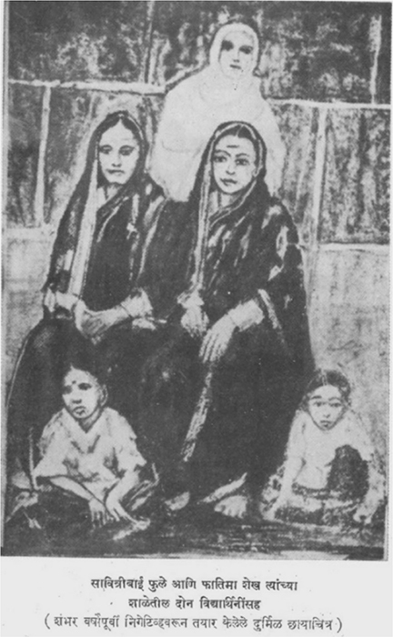

Savitribai Phule
3 January 1831 – 10 March 1897
India's First Female Teacher
Early Life
Born in Naigaon, Maharashtra, Savitribai was married at age 9 to Jyotiba Phule. She learned to read and write with her husband's encouragement, becoming one of the first educated women of her generation.
Pioneer of Women's Education
In 1848, at age 17, Savitribai along with Jyotiba founded the first school for girls in Bhide Wada, Pune. She served as the first teacher, facing daily harassment from orthodox opponents who threw stones and dung at her. She carried a spare saree to change after such attacks.
Social Work
Savitribai and Jyotiba opened 18 schools across Maharashtra. She also worked tirelessly for the welfare of widows, established a shelter for abandoned women, and fought against child marriage and the practice of Sati.
Poet & Activist
She was also a poet and wrote about social issues. Her collection Kavyaphule (Poetic Blossoms) was published in 1854. She continued her social work even during the devastating famines of the 1870s, personally distributing food and medicine.
Legacy
Savitribai Phule is celebrated as the mother of Indian feminism. Her courage in breaking gender and caste barriers paved the way for generations of women. Her birthday is observed as Savitribai Phule Jayanti, especially in Maharashtra's educational institutions.